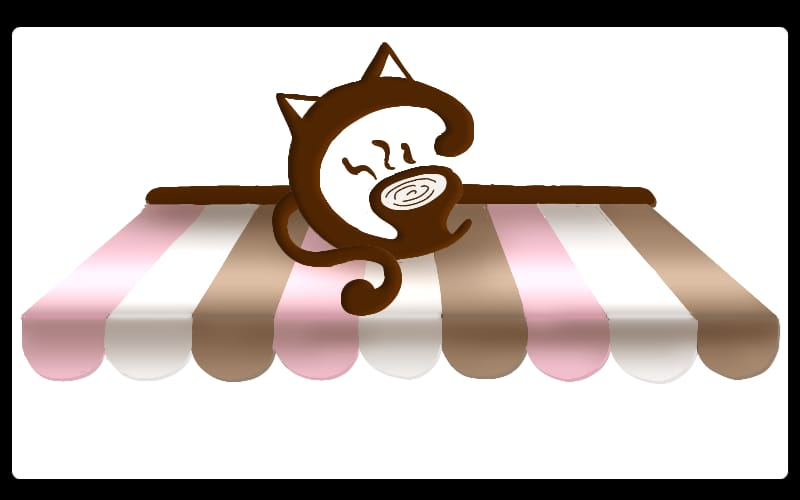
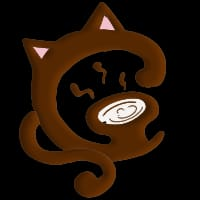

SOBRE NOS!
O Machigatto é uma cafeteria para quem gosta de um lugar aconchegante para tomar um café e gatinhos.
Venha se deliciar com o nosso cardápio que possui o melhor da confeitaria e os clássicos cafés e salgados. Enquanto você espera seu pedido, durante ou após o mesmo, poderá desfrutar de uma manhã ou tarde com nossos amigos felinos.
O nosso café, fundado em 2022, é ambientado com uma decoração clássica americana, mas com uma paleta moderna e um espaço próprio para os gatinhos e seus brinquedos. O Machigatto já conquistando uma grande clientela apaixonada por gatos, com nossos profissionais qualidicados e um ótimo atendimento.
Horário de funcionamento é das 6:00h ás 19:10h de segunda a sexta; das 09:00h ás 18:00h nos sábados - Avenida Pedro Taques, Maringá, Paraná.
